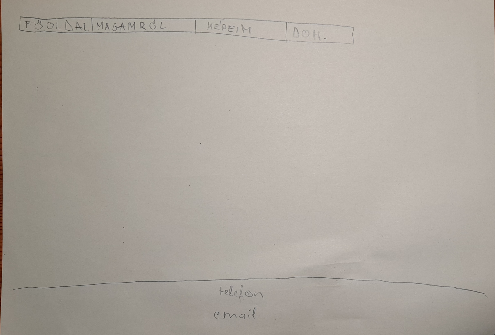
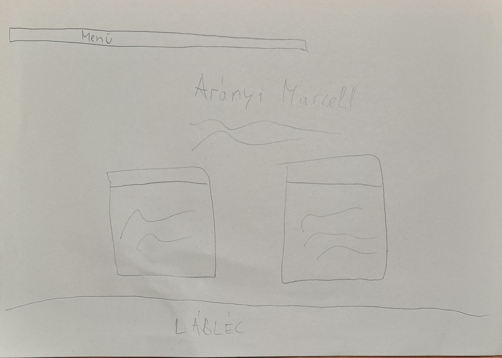
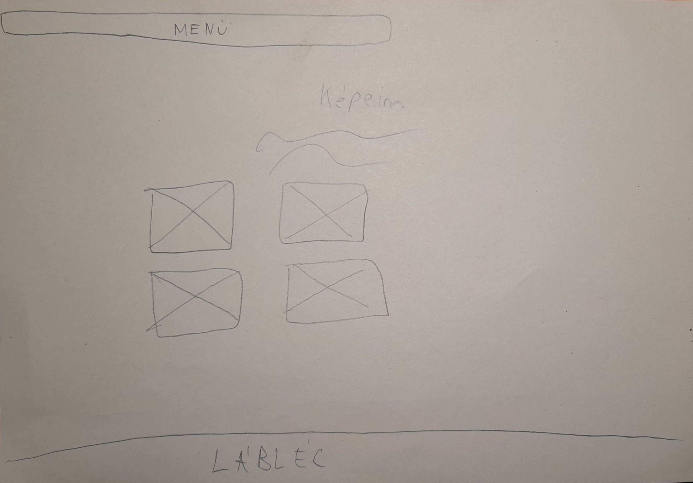
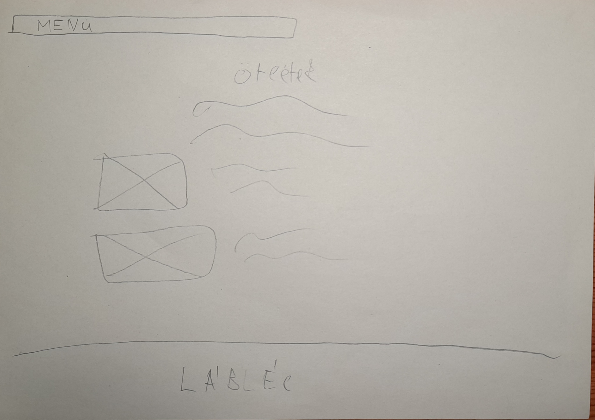

<!DOCTYPE html>
<html>
<head>
	<meta charset="utf-8">
	<meta name="viewport" content="width=device-width, initial-scale=1">
	<title>portfolio_Aranyi Marcell_FJXRZG</title>
	<link rel="stylesheet" type="text/css" href="main.css">
</head>
<body>

</body>
</html>
<body>
	
	<section class="hatter">
		<div class="menu">
		<ul>
			<li><a href="index.html">főoldal</a></li>
			<li><a href="magamrol.html">magamrol</a></li>
			<li><a href="kepek.html">képeim</a></li>
			<li><a href="dokumentacio.html">dokumentáció</a></li>
		</ul>
		</div>
		<div class="kezdolap">
			<h1>
				alapötletek
			</h1>
		</div>
	</section>
	</section>

	<section class="dokumentaciostervek">
			<div class="tervek">
				<div class="tervezes">
					
				</div>
				<div class="tervezes">
					<p>Mindenképp szerettem volna egy főoldalt. Ez összefogja a weboldalt és egy letisztult felületet mutat a felhasználónak megérkezéskor. Itt megalkottam a menüsort és a láblécet, a többi oldalra innen raktam be. <br> Alapötletként annyi volt meg, hogy mindenképpen egy képet szerettem volna háttérnek.</p>
				</div>
				<div class="tervezes">
					
				</div>
				<div class="tervezes">
					<p>A következő oldalt magamnak szenteltem, bár nem akartam személyes adatokat leírni, igy csak "lipsum" van ott.<br> Középre fel van írva a nevem és kettő "kártyát szerettem volna még csinálni a tanulmányaimról és a fotós dolgaimról.</p>
				</div>
				<div class="tervezes">
					
				</div>
				<div class="tervezes">
					<p>Ha már megemlítettem a fényképezést, szerettem volna ennek is egy oldalt. A saját képeim vannak feltöltve, és kis leírást is csináltam róluk.</p>
				</div>
				<div class="tervezes">
					
				</div>
				<div class="tervezes">
					<p>A dokumentáció oldalra alapötleteimet raktam fel, bár sajnos nem látszódnak túl jól. mindegyikhez írtam pár sort, hogy mi volt az elképzelés.</p>
				</div>
				<p>Az eredeti ötlethez képest nem történt sok változás, csak kiegészítettem hover efektekkel. Figyelembe kellett venni a responsivitást ez kis nehézséggel járt. <br> A használthonlapok elsősorban a www.youtube.com illetve az órai anyagokból használtam fel elemeket.</p>
			</div>
		</div>
		</section>
		</section>

	<section class="lablec">
		<div class="kontakt">
			<h6>+36 30 012 3456</h6>
			<p>mintadiak@email.com</p>
	 </div>
	</section>
	
</body>
</html>